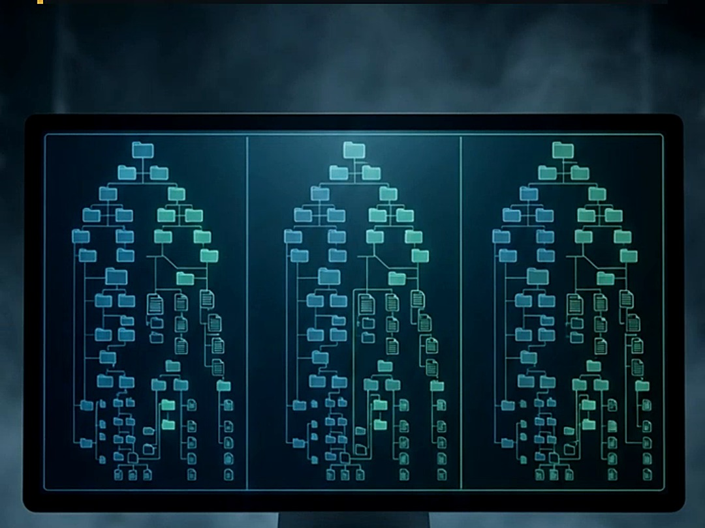
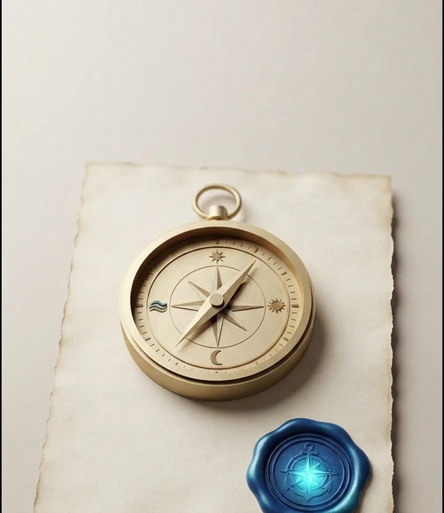
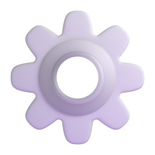
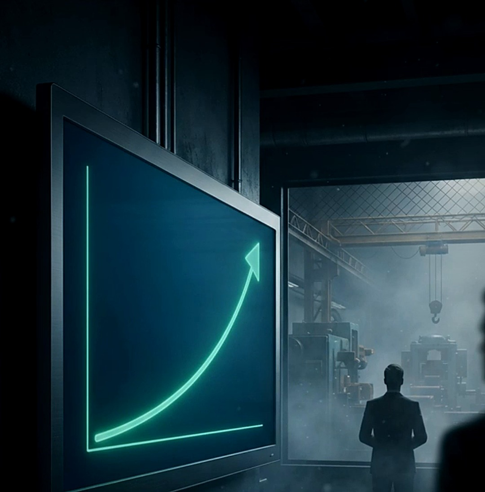

ISO 9001 · QUALITÉ
CARTOGRAPHIE
DES PROCESSUS
5erreurs à éviter
Votre entreprise : un labyrinthe… ou une carte claire ?
🌀 Labyrinthe
✓ Carte claire
Définition
3 niveaux
3 familles
5 erreurs
Pilotage
La cartographie des processus, c'est son GPS.

GPS
de l'entreprise
Attention : ce n'est pas un organigramme.
On suit les flux, de la demande du client jusqu'à la valeur livrée.
C'est ce qu'exige la norme ISO 9001, au chapitre 4.4.
Organigramme
 Demande client
Demande clientPROCESSUS 1
PROCESSUS 2
PROCESSUS 3
 Valeur livrée
Valeur livrée
La norme
ISO
9001
§ 4.4 · PROCESSUS
EXIGÉ
Une bonne carte se lit sur trois niveaux.
Macro : la vue satellite, pour la direction et l'auditeur.
Méso : chaque processus, vu de l'intérieur.
Micro : le logigramme, tâche par tâche, pour l'opérateur.

DÉBUT
TÂCHE 1
?
TÂCHE 2
 Carte des processus
Carte des processusVUE SATELLITE
+
MACRO
MÉSO
MICRO
−
Direction · Auditeur
Pilotes de processus
Opérateurs
Et partout, trois familles.
Le management, qui fixe le cap.
La réalisation, qui crée la valeur pour le client.
Et le support, sans qui tout s'arrête.

MANAGEMENT
fixe le cap

RÉALISATION
crée la valeur client

CLIENT
SUPPORT
sans lui, tout s'arrête

Maintenant, les cinq erreurs à éviter.
Un : dessiner le processus idéal, au lieu du processus réel.
Deux : une carte si complexe que personne ne la comprend.
Trois : un processus sans pilote.
Quatre : une carte accrochée au mur, jamais mise à jour.
Cinq : aucun indicateur pour la piloter.
1
2
3
4
5
5
erreurs à éviter
1
Idéal ≠ réel
Sur le papier
LE TERRAIN
2
Trop complexe
?
?
?
3
Sans pilote
PILOTE :
_ _ _ _
Rien ne bouge
4
Jamais mise à jour
MAJ
2019
AU MUR
5
Aucun indicateur
KPI : — —

Une cartographie n'est pas faite pour l'auditeur.
C'est un outil de pilotage, qui vit au rythme de l'entreprise.
Un document
pour l'auditeur
Un outil de pilotage
Pouls de l'entreprise
Alors, votre carte : claire, ou labyrinthe ?
Dites-le-moi en commentaire.
✓ CLAIRE
🌀 LABYRINTHE
Ajouter un commentaire…
Publier
Des normes aujourd'hui,
un avenir durable demain
un avenir durable demain
Cartographie des processus · ISO 9001